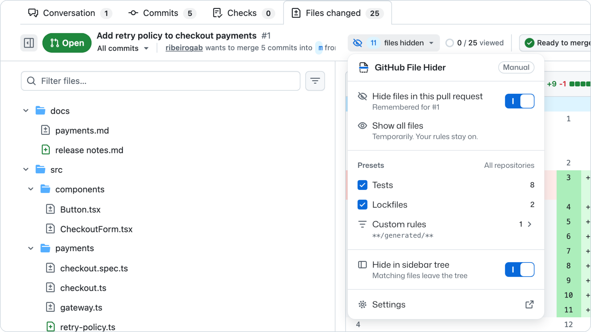

Chrome extension for pull request reviews
Review the code that matters first.
Hide tests, lockfiles, and generated code in pull requests. Bring them back when you are ready.
Free and open source. MIT license. No account.
All files are hidden
Every file in this pull request matches your rules. Hidden files are still part of the pull request and may need review.
A replica built from the 25 files of the real demo pull request. Rules match paths the way the extension does. The tab still says 25 files changed, because File Hider changes only what you see.
How it works
Three steps, all inside the pull request.
Set your rules once. They apply to every repository on github.com. Each pull request then needs one click.
-
Choose what to hide
Turn on the Tests or Lockfiles preset, or write rules such as
docs/**or**/*.sql. Rules match file paths from the repository root. -
Select Hide files
The control sits in the pull request toolbar. Matching files leave the page, and the control counts them. In Manual mode, File Hider remembers the choice for that pull request.
-
Review, then show the rest
When you are ready, select Show all files. Your rules stay on, and the control reads Hide files again for when you want the short list back.
Screenshot
The real extension on github.com
This is GitHub File Hider on the demo pull request, with the menu open. Same files, same rules, and the same 11 files hidden as the replica above.
Open the demo pull request to try it with the extension installed.

Features
What it does
Every rule is a path pattern. Every hidden file is one click away. Nothing else on the page changes.
Presets for tests and lockfiles
Tests covers
**/*.spec.*,**/*.test.*and**/__tests__/**. Lockfiles covers npm, Yarn and pnpm lockfiles. Both start off. Edit their rules, or restore the defaults.Custom rules
Write any path pattern from the repository root, such as
docs/**,**/generated/**,src/config.tsor**/*.sql. Turn a rule off without deleting it.Always show
Keep one file visible while similar files stay hidden. Hide every spec file, but keep
src/payments/checkout.spec.tson the page.Manual or Automatic
Manual is the default. Every pull request starts with all files visible, and your Hide files choice is remembered for that pull request. Automatic applies your rules as soon as Files changed opens.
Direct links still work
A link to a hidden file, or to a comment in it, shows that file for now. A notice says why, and a Hide again button puts it back.
A shorter sidebar tree
Matching files leave the file tree too. Turn off Hide in sidebar tree to keep the tree complete, with matching files muted and marked with an eye-off icon.
Part of GitHub's toolbar
The control uses GitHub's own components and follows your GitHub light or dark theme.
Commits too
Works on the Files changed page of a pull request, on a single commit, and on a commit range.
Privacy
No account. No server. No tracking.
File Hider is display only. It hides files from your view and leaves the pull request as it is.
GitHub still says 25 files changed.
- Settings stay in this browser
- Rules and choices live in
chrome.storage.local. They are not synced between devices. - Runs only on github.com
- It asks for two permissions:
storageandhttps://github.com/*. - Display only
- It never changes files, comments, reviews, or the files you marked as viewed. GitHub's own counts stay the same.
- Open source
- MIT license. Read every line on GitHub.
Compatibility
Where it works
File Hider follows the current GitHub interface. If something looks off, open an issue.
Works on
- Chrome
- The current Files changed page on github.com
- Single commit and commit range views
Not supported
- The classic
/filespage - GitHub Enterprise
- Other browsers
Versions are named by release date, such as 2026.10.03.1. See every change in the releases.